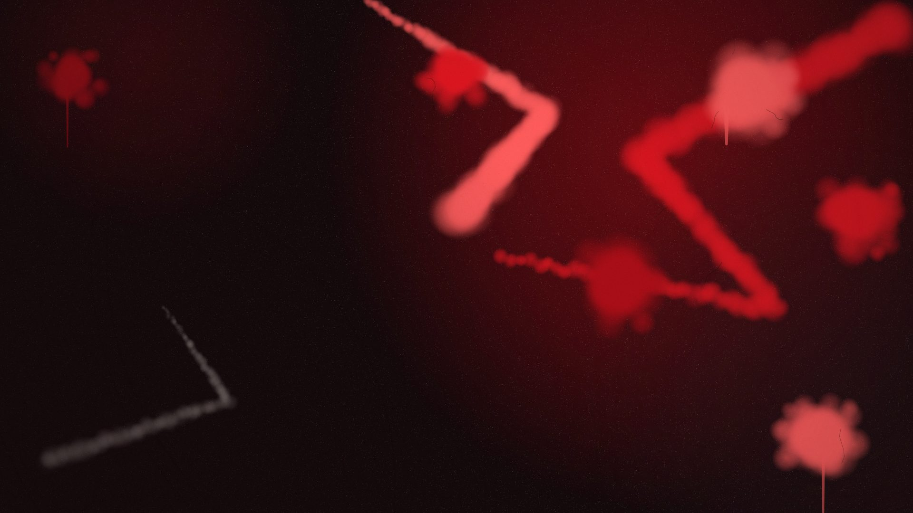
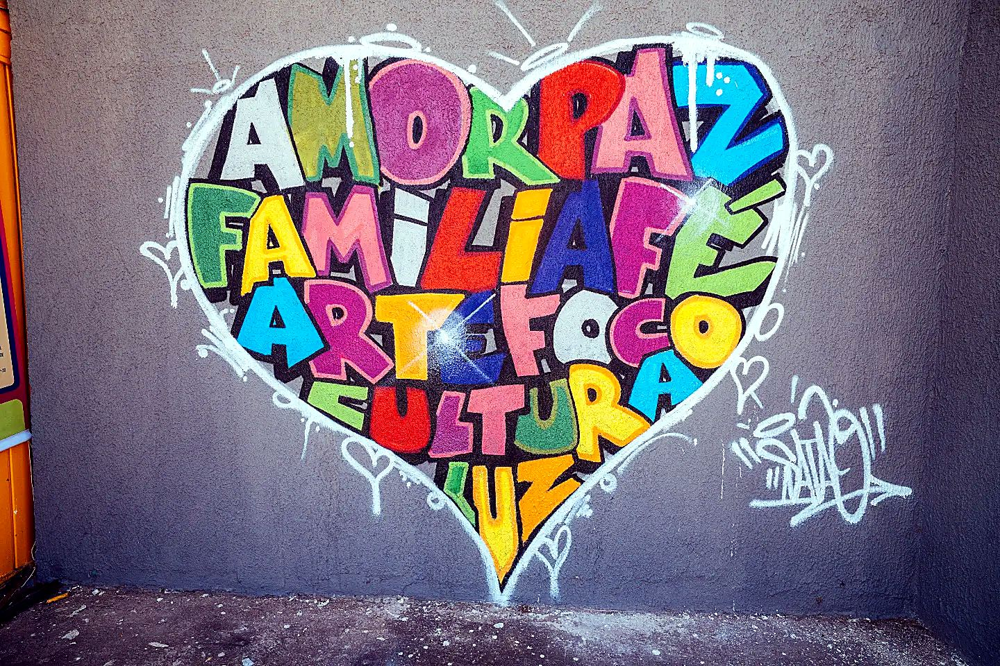
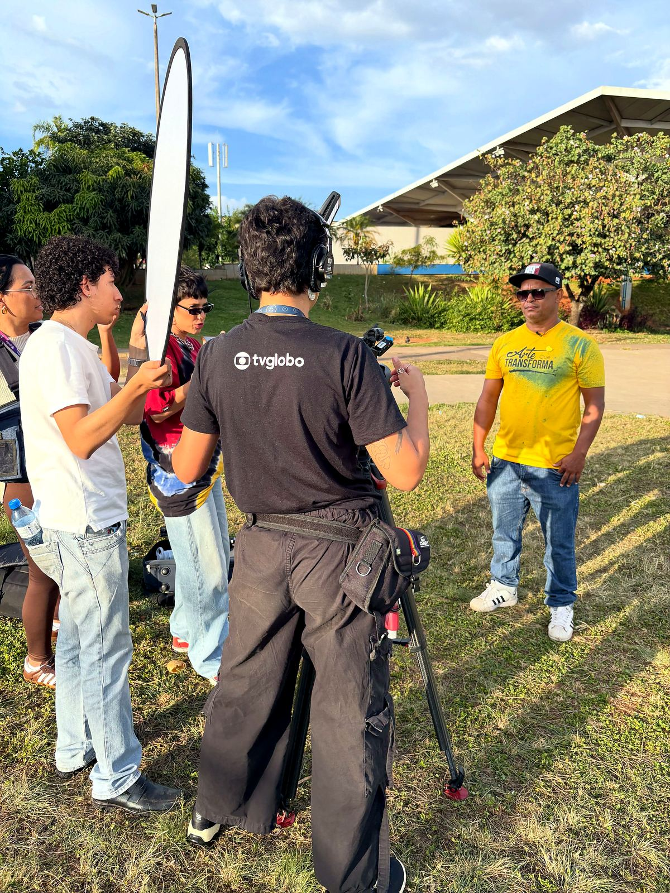
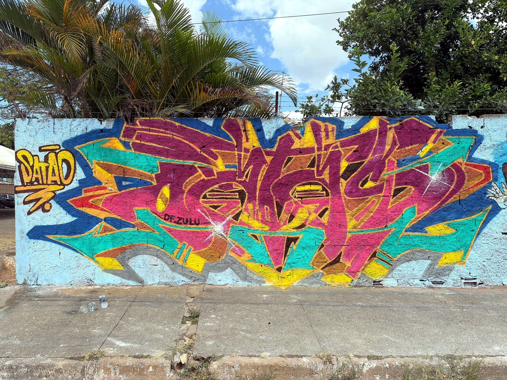
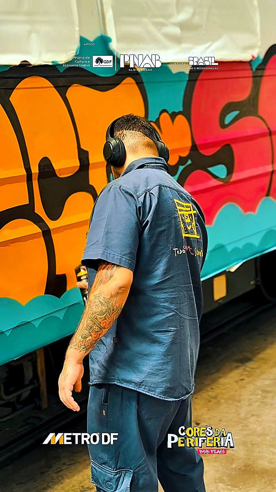
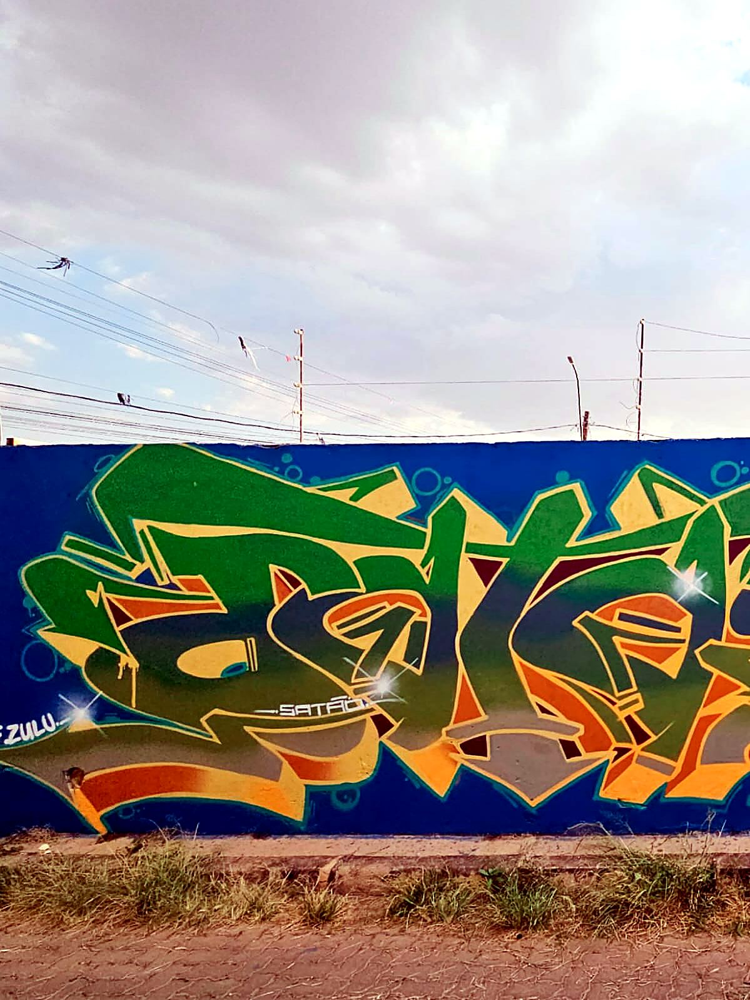
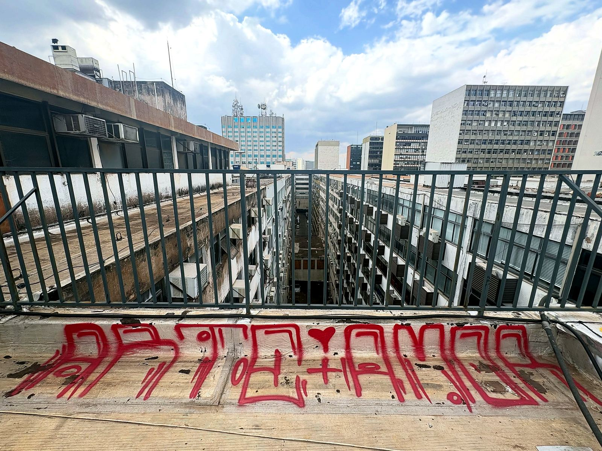

EMBREVE
PRÓXIMA AÇÃO
AGENDA 2026 EM ATUALIZAÇÃO
Quer receber a programação de murais, oficinas e encontros? Acompanhe este espaço.

Grafite, memória urbana e cultura Hip Hop em Brasília — na voz de Gilmar Satão.
TRAJETÓRIA
ANOS 1990 — AGORANascido e criado na Ceilândia, Gilmar Satão é grafiteiro, jornalista, produtor e uma voz ativa da cultura Hip Hop em Brasília.
Depois de uma década pelas ruas, o encontro com o Hip Hop abriu outra linguagem: o grafite como presença, criação e diálogo com a quebrada.
No começo dos anos 1990, ao lado de Sowtto e Supla, ajudou a formar a OS-3S — uma das primeiras crews de grafite do Distrito Federal. O traço wild-style ganhou os muros e passou a fazer parte da memória visual de Brasília.
O GRAFITE TRANSFORMA O ESPAÇO PÚBLICO EM ARQUIVO VIVO.
Entre muros, escolas, encontros e ações culturais, a prática de Satão reafirma a rua como lugar de troca e permanência.
Registros do traço de Satão em muros, vagões e encontros — a mesma trajetória iniciada com a OS-3S e o DF Zulu, nos anos 1990.






Novas datas, pinturas e encontros serão publicados aqui.
PRÓXIMA AÇÃO
Quer receber a programação de murais, oficinas e encontros? Acompanhe este espaço.
ENCONTRO
Sol Nascente recebeu um encontro que celebrou três décadas de trajetória e reuniu artistas de diferentes estados.
A CIDADE É NOSSA TELA.